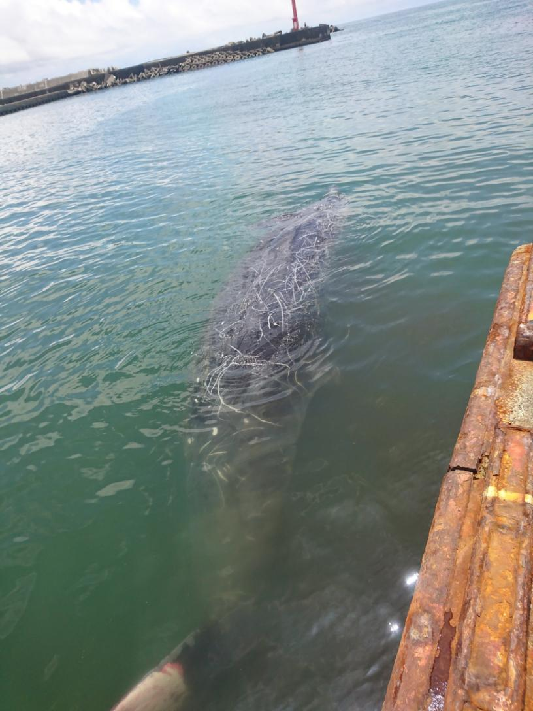

クジラの解体作業
、千葉県南房総市和田町にある外房捕鯨株式会社が行っているクジラの解体作業を見学しに行きました。
場所は、チーバくんのくるぶしとかふくろはぎのとこかな？ チーバくん短足だから足の構造がよく分からない。とりあえず、千葉の下の方。
にクジラの爆発の動画を見ていて、それがきっかけとなり「クジラの解体ってどこかでやってないかなぁ」と思って調べてみたら千葉でやっていました！ 千葉でクジラの解体作業をしている外房捕鯨株式会社さんのサイトにはクジラの捕獲情報や解体日時等が書いてありました。これを見たらなんと明日に解体作業するとのこと。「よし、明日行こう」と即決。昼頃からの作業を見ることにしました。
そして6月8日当日。本当に行きました。我ながら行動力すごい。片道4時間かかるのに。
解体作業場所の最寄り駅は内房線の和田浦駅。電車はガラガラでした（笑）
駅近くの建物の前に、クジラの全身骨格の標本的なものが飾ってありました。和田町駅から解体場まで歩く途中に、クジラの皮膚らしきものを外で干している魚屋もありました。
そんなこんなで解体場到着。解体場は海に面していて、近くの水辺にはすでに解体用のクジラが浮いていました。
体長9.98ｍのツチクジラ。これは今年5体目に捕獲されたクジラらしい。例年は26体ほど取れるみたいですが、去年と今年は不調だったようで、去年は10数体しか取れなかったそうです。それらのクジラは出荷用に使われてしまい、地元の人はあまり食べられなかったとのこと。
解体作業中はずっと動画で撮影していました。YouTubeにアップしたのでよかったら見てください。自分の目でも見ておきたかったので撮影画面を見ずに撮影していたり、頻繁に移動しながら撮影していたり、YouTubeの顔ぼかし処理機能を使っていたりするので、画面がブレブレのときもあるし、ピントが合っていないときもあるし、何撮っているのかよく分からないときもあります。予めご了承をm(__)m。
体についている白い線は傷。海から解体場まで引きずる間に地面に擦れてはがれた皮膚があったので手に取ってみました（皮膚を手に取った写真を載せようかと思いましたが、写真から指紋を複製する技術が確かあったので控えます...）。つるつるしており、弾性はあまりなくて横に引っ張るとちぎれってしまいました。押した感触は柔らかかったです。輪ゴムくらいかな。断面は２～３層に分かれていました。
小さいブロック状の皮膚直下の肉（白身の部分）が近くに落ちていたので拾ってみたりもしました。表面はざらざらで、肉質は硬かったです。手で引きちぎれそうになく、爪で切るのにも苦労するくらいの硬さでした。
あと、脊椎を切り分けてた。

フィードバック
ご意見やお聞きしたいことがございましたら、TwitterのDMかメールにご連絡ください。